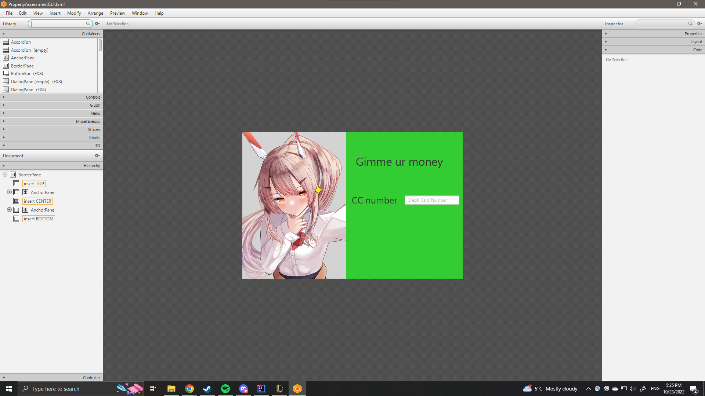

I went on discord and told a joke, I thought it was funny and the server members responded with that exact same my honest reaction cat image. I am now forever saddened by this.
To cope with this sadness I listen to this song on YouTube. You too can listen to it by clicking the link here it will open in a new tab :)
This is a filler sentence to give the illusion that this website appears to be legit and professional. It serves the pupose of making extra content to show that I can use paragraph tag in HTML. By incorporating this well thought paragraph, the overall impression of the website is prolonged and presented with a heightened sense of formality, when in reality it is just saying the same stuff over and over and over and over and over again.
Truthfully, I don't know why reading the contents of this site still intrigues you... Literally just typing random stuff so the site seems full and meaningful, according the instructions I should be making another section that is exactly the same as the first section. It states that I should include an anchor, image and an external link... Sadly I can't just copy and paste the first section since it has to be distinct. I could probably use this 2nd section to create a resume line, but I am typing this instead, because I has smol brain.
Anyways here is something that I made when testing out SceneBuilder from two years ago
While making that ethical SceneBuilder page I drew my inspiration while listening to this masterpiece on soundcloud.
Congrats on making it this far. Truely have so much admiration to how you are still reading these high quality, well-thought paragraphs. Putting this sentence here so section 3 seems longer. I currently don't know what my picture should be for this section so I will just take a picture of my roommate and post it here... with his permission ofcourse.
Assignment #1 really taught me about basic HTML structure and CSS styling. It gave me insights on features that to create a responsive design and for it to be interactable. Doing assignment 1 gave me inspiration to research more about UI designs and web standards.
Must say it is a good picture. I may have done him dirty, so here is a better picture of him looking professional. You can view it here.
Go back to the top ^^